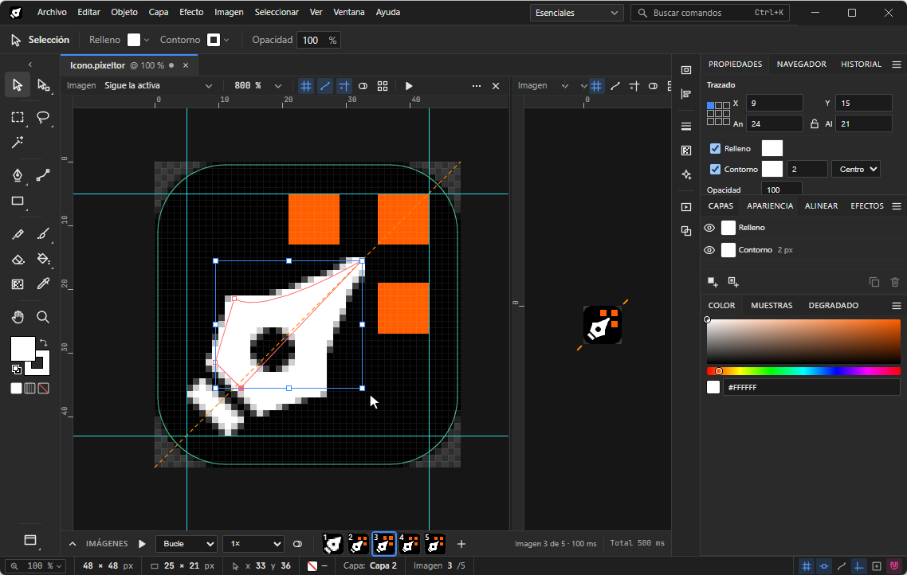

Documentación
Guía de uso de Pixeltor, un editor de pixel art para Windows y Linux con capas inteligentes. Los atajos se muestran para Windows y Linux; todos se pueden cambiar en Ayuda › Atajos de teclado….
Instalación
Descarga la última versión desde la sección de descargas o desde las releases de GitHub.
| Plataforma | Formato | Cómo usarlo |
|---|---|---|
| Windows | Instalador -setup.exe | Ejecútalo y elige la carpeta de instalación. Registra la extensión .pixeltor (doble clic para abrir) y se actualiza solo. |
| Windows | Portable -portable.exe | No requiere instalación: ejecútalo directamente. |
| Linux | .AppImage | chmod +x Pixeltor-*.AppImage y ejecútalo. |
| Linux (Debian/Ubuntu) | .deb | sudo apt install ./Pixeltor-*.deb |
En Edición › Preferencias… puedes activar o desactivar la actualización automática, elegir el tema (oscuro, gris o claro) y la escala de la interfaz.
Inicio rápido
- En la pantalla de bienvenida pulsa Nuevo (Ctrl+N) y elige un tamaño, por ejemplo 32×32 px, o abre un reciente.
- Selecciona el Lápiz (N) y pinta sobre el lienzo. Amplía con Ctrl++ o con la rueda.
- Dibuja una forma con Rectángulo (M) o Elipse (L) y cambia su relleno y contorno en el panel Apariencia.
- Añade un efecto, por ejemplo una Sombra paralela, desde el menú Efecto.
- Guarda con Ctrl+S y exporta con Ctrl+Alt+S.
Capas inteligentes
Un documento (.pixeltor) contiene una o más imágenes. Cada imagen es un lienzo de W×H px con una pila de capas. Cada capa tiene tres partes:
| Parte | Qué es |
|---|---|
| Ráster base | El mapa de bits RGBA de la capa. Aquí actúan lápiz, pincel, borrador y bote de pintura. |
| Formas | Objetos vectoriales (rectángulo, elipse, línea, polígono, estrella, trazado) que se rasterizan en vivo, siempre pixel-perfect, sin suavizado. Mantienen su trazado editable. |
| Efectos | Transformaciones no destructivas sobre una forma o sobre toda la capa. |
El orden de composición dentro de una capa es: ráster base (abajo) → formas en su orden z → efectos de capa. Pintar con el pincel afecta siempre al ráster base, que queda debajo de las formas de esa misma capa; para pintar encima de una forma usa una capa superior.
Principio clave: lo que ves en el lienzo es exactamente lo que se exporta, y el resultado es determinista: el mismo documento produce los mismos bytes en cualquier plataforma.
La interfaz

- Barra de herramientas (izquierda): herramientas agrupadas con flyouts; el número de columnas es configurable.
- Barra de control (arriba): opciones contextuales de la herramienta activa.
- Paneles acoplables (derecha): Capas, Apariencia, Color, Paletas, Navegador, Efectos, etc. Se pueden reorganizar y guardar como espacios de trabajo.
- Panel Imágenes / Animación (abajo): tira de imágenes con duración en ms y controles de reproducción.
- Pestañas de documento y barra de estado con zoom, tamaño de imagen y ajuste a cuadrícula.
- Guías: arrástralas desde las reglas; doble clic en una guía abre un diálogo de posición que admite expresiones como
100%o100% - 10. - Vista previa (Ctrl+Shift+Y): oculta trazados, cuadrícula y guías para ver el resultado limpio.
Herramientas
| Grupo | Herramienta | Atajo |
|---|---|---|
| Selección | Selección (mover/escalar formas y capas) | V |
| Selección directa (anclas y tiradores) | A | |
| Selección de grupo | — | |
| Selección de píxeles | Marco rectangular / elíptico | S / Shift+S |
| Lazo y lazo poligonal | Q | |
| Varita mágica (tolerancia, contigua, todas las capas) | W | |
| Recortar a la selección | menú Imagen | |
| Pintura | Lápiz (1 px, pixel-perfect) | N |
| Pincel (tamaño, forma, opacidad, tramado) | B | |
| Borrador | E | |
| Bote de pintura | K | |
| Reemplazar color | Shift+K | |
| Sombreado (aclara/oscurece por la rampa de la paleta) | Shift+B | |
| Vectores | Pluma (+ añadir / eliminar / convertir ancla) | P, +, -, Shift+C |
| Línea | \ | |
| Rectángulo (y redondeado) | M | |
| Elipse | L | |
| Polígono, Estrella | flyout | |
| Lápiz vectorial (mano alzada simplificada) | Shift+N | |
| Degradado (edición en el lienzo) | G | |
| Color | Cuentagotas (capa actual o composición) | I |
| Navegación | Mano | H o Espacio |
| Zoom | Z |
Operaciones de imagen y capa
- Tamaño de lienzo (Imagen › Tamaño de lienzo…): ancho, alto y ancla 3×3; recorta o amplía todas las capas.
- Tamaño de imagen: escala por vecino más cercano con opción de mantener proporción.
- Combinar hacia abajo, combinar visibles y aplanar imagen: usan el mismo código de composición que el visor, así que el render no cambia.
- Grupos de capas (Ctrl+Alt+Shift+G): componen a sus miembros en un búfer propio.
Formas y trazados
Las formas son vectores que se muestran pixelados. Cada una tiene una Apariencia: una pila ordenada de rellenos y contornos (varios de cada uno), como el panel Apariencia de Illustrator, con degradados y tramado.
- Anclas y tiradores: con Selección directa (A) mueve anclas y curvas. Las anclas y los tiradores caen siempre en el centro de un píxel, de modo que el contorno y lo pintado coinciden.
- Convertir en trazado: transforma una forma paramétrica en trazado editable. Objeto › Centrar anclas en los píxeles corrige formas antiguas.
- Buscatrazos (Objeto › Buscatrazos): unir, restar la forma frontal, intersecar y excluir, en un solo paso deshacible.
- Agrupar (Ctrl+G), ordenar (Ctrl+] / [), duplicar con Alt+arrastrar y alinear.
- Ajuste: Ajustar al píxel (Ctrl+Alt+') y guías inteligentes (Ctrl+U).
Color y paletas
El color se trabaja en RGBA de 8 bits. Los paneles Color y Paletas permiten guardar y organizar colores; el Sombreado recorre la rampa de la paleta. Los degradados admiten tramado (dithering) para mantener el aspecto pixelado, y el efecto Reducir a paleta cuantiza el resultado a una paleta con o sin tramado.
Espejo de capa
El modificador Espejo de una capa refleja lo que pintas según un eje vertical, horizontal o diagonal. Los ejes son arrastrables en el lienzo y Ver líneas espejo los muestra u oculta. Es ideal para sprites simétricos.
Efectos no destructivos
Los efectos se aplican a una forma o a una capa completa. Nunca modifican el ráster base: puedes reordenarlos, ajustarlos o quitarlos en cualquier momento. Todas las distancias son enteras en píxeles.
| Categoría | Efectos |
|---|---|
| Sombras e iluminación | Sombra paralela, sombra interior, sombra larga, resplandor exterior e interior, iluminación direccional (sombreado automático por bordes), bisel |
| Contornos | Contorno de píxel (grosor 1–8, exterior/interior, conectividad 4 u 8) |
| Desenfoque | Gaussiano, de caja, de movimiento |
| Distorsión | Onda, ondulación, torsión, desplazamiento (con envolver para tiles), pixelar/mosaico |
| Color | Tono/Saturación/Luminosidad, brillo/contraste, mapa de degradado, reemplazar colores (variantes de paleta), posterizar/reducir a paleta, invertir, superposición de color |
Las distorsiones muestrean por vecino más cercano. Un efecto de capa se calcula sobre ráster base + formas, que siguen siendo editables.
Estampar y rasterizar
Son las operaciones destructivas, siempre explícitas y deshacibles. Estampar convierte una forma (con su apariencia y efectos) en píxeles del ráster base y elimina el vector.
| Comando | Atajo |
|---|---|
| Estampar formas seleccionadas | Ctrl+E |
| Estampar todas las formas de la capa | Ctrl+Shift+E |
| Rasterizar efectos de capa | Ctrl+Alt+E |
Estampar o rasterizar no cambia cómo se ve la imagen: el render antes y después es idéntico. Solo cambia lo que sigue siendo editable.
Animación
Un documento puede tener varias imágenes; cada una tiene una duración en milisegundos. En orden forman una animación, o simplemente una colección (por ejemplo iconos de 16, 32 y 48 px; las imágenes pueden tener tamaños distintos).
- Nueva imagen: Ctrl+Alt+N. Navega con , y ..
- Tira de imágenes: miniaturas con duración editable; arrastra para reordenar y Alt+arrastrar para duplicar. Selección múltiple con Shift/Ctrl.
- Reproducción: bucle, ping-pong o una vez; velocidades de 0,25× a 2×. Ctrl+Enter reproduce o pausa.
- Papel cebolla (O): muestra imágenes anteriores y siguientes semitransparentes, con tinte rojo/azul. Es solo una ayuda visual; nunca se exporta.
Visores divididos
Como en Blender, el área de trabajo se puede dividir en hasta 4 visores del mismo documento. Cada uno tiene su propio zoom y edición completa; el resultado aparece en todos al instante.
- Dividir vertical: Ctrl+Alt+V · horizontal: Ctrl+Alt+H. Arrastra los separadores; doble clic los iguala.
- La cabecera de cada visor permite fijar una imagen, ajustar zoom, cuadrícula de píxeles, trazados, papel cebolla y reproducir solo ahí.
- Modo mosaico: repite la imagen 3×3 para comprobar que un tile encaja; puedes editar en cualquier copia.
Caso típico: un visor al 1200 % para pintar y otro al 100 % para ver el resultado real.
Exportar
Archivo › Exportar como… (Ctrl+Alt+S) muestra una vista previa y las opciones. Exportar de nuevo (Ctrl+Alt+Shift+S) repite la última configuración. Exportar no modifica el documento.
| Formato | Notas |
|---|---|
| PNG | RGBA de 8 bits, o indexado si hay 256 colores o menos. |
| Secuencia PNG | Un archivo por imagen. |
| Hoja de sprites | Horizontal, vertical, rejilla o empaquetada; relleno y extrusión; JSON de metadatos compatible con TexturePacker/Aseprite. |
| GIF animado | Duración por imagen (redondeada a 10 ms, con aviso), bucle y umbral de transparencia. |
| APNG | Animación con alfa completo. |
| ICO | Combina imágenes de varios tamaños (hasta 256 px) en un solo icono. |
Opciones comunes: qué imágenes exportar, escala entera (×1 a ×16, siempre vecino más cercano, con varios tamaños a la vez), recorte al contenido, fondo transparente o de color y plantilla de nombre {doc}_{image}_{index}{scale}.
Importar
Abre imágenes PNG y otros formatos de mapa de bits como capas o documentos nuevos, y los documentos .pixeltor con doble clic.
Formato .pixeltor
Es un archivo ZIP con JSON y PNG, versionado y abierto, de modo que puedes inspeccionarlo o procesarlo con otras herramientas.
mi-sprite.pixeltor
├─ mimetype application/x-pixeltor
├─ manifest.json versión del formato, app, recursos, checksums
├─ document.json modelo completo (sin buffers de píxeles)
├─ rasters/ un PNG RGBA sin pérdidas por cada ráster base
├─ thumbnails/ miniaturas del documento y de cada imagen
└─ ui.json (opcional) visores, zoom, imagen activaLos rásters totalmente transparentes no se guardan. Los archivos antiguos se migran al abrirlos.
Historial y autoguardado
- Deshacer / rehacer: Ctrl+Z y Ctrl+Shift+Z. Todo cambio al documento es un comando deshacible.
- Recientes en la pantalla de bienvenida; el diálogo Abrir recuerda la última carpeta.
- Preferencias y atajos personalizados se guardan en los ajustes de la aplicación.
Atajos de teclado
Los atajos de herramientas están en la tabla de herramientas. Comandos generales:
| Comando | Atajo |
|---|---|
| Nuevo / Abrir / Guardar / Guardar como | Ctrl+N / O / S / Shift+S |
| Deshacer / Rehacer | Ctrl+Z / Ctrl+Shift+Z (o Ctrl+Y) |
| Duplicar capa | Ctrl+J |
| Nueva capa | Ctrl+Shift+N |
| Agrupar / desagrupar formas | Ctrl+G / Ctrl+Shift+G |
| Traer adelante / al frente | Ctrl+] / Ctrl+Shift+] |
| Enviar atrás / al fondo | Ctrl+[ / Ctrl+Shift+[ |
| Cuadrícula de píxeles | Ctrl+' |
| Mostrar/ocultar guías | Ctrl+; |
| Ocultar trazados | Ctrl+H |
| Zoom 100 % / Encajar / Acercar / Alejar | Ctrl+1 / 0 / + / - |
| Papel cebolla | O |
Límites y novedades
- Tamaño máximo de imagen: 2048×2048 px (fluido hasta 1024×1024).
- Hasta 4 visores por documento.
Todavía no disponible: rotación de la vista y exportación a WebP animado están planificadas pero diferidas. Tampoco hay texto con fuentes TrueType, interpolación de formas ni colaboración en tiempo real.
El historial completo de cambios está en el CHANGELOG. ¿Encontraste un error? Abre una incidencia.